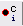

Picking tutorial for Tomography¶
This page will present the different picking protocols and strategies available in Scipion for Tomography and the Plugins where the various programs can be found. The tutorial will cover from the picking step to the extraction of the coordinates selected in the tomogram, including some useful tools to complement the protocols involved in the picking workflows.
Additional resources¶
Here you can find some valuable resources to complement the contents described in the tutorial:
Where to find the protocols?¶
Protocols needed to perform and analyze pickings are available in the following plugins:
scipion-em-emantomo
scipion-em-dynamo
scipion-em-tomoviz
scipion-em-xmipptomo
It is worth mentioning that all these plugins strongly depend on the scipion-em-tomo plugin, which should be installed before any of the earlier mentioned Plugins.
Picking strategies in Scipion for Tomography¶
Currently, we have implemented two different picking strategies that can be applied to your dataset:
Directional picking
Non-directional picking
The main difference between the two is the information they can extract on the particle’s orientation found in your tomograms.
Non-directional pickings are the direct extension of common SPA pickings to the third dimension. Consequently, the selected coordinates will only include information on the spatial location of a specific particle in a tomogram.
On the other hand, directional pickings will provide both the spatial location of the particle in the tomogram, and the initial orientation of that particle referred to another structure like a membrane. Thanks to this initial alignment, it is possible to simplify further steps in the workflow.
Deciding which strategy suits your data better depends on the conditions of the particles inside the tomogram. In general, suspended particles are better handled by non-directional pickings, while particles close or attached to a vesicle or describing specific geometries are more easily analyzed by directional pickings.
Preliminary steps¶
If you are new to Scipion, we strongly suggest that you follow this Scipion tutorial to learn how to navigate and work with the interface of Scipion. In the previous tutorial, you will find how to look for and create new protocols, together with some examples of SPA workflows.
Directional picking tutorial¶
The following sections will describe the procedure to pick oriented particles with Dynamo software inside Scipion. The data analyzed during the tutorial is available here.
Step 0: Importing and binning the data¶
Firstly, we need to import our tomograms inside Scipion with any import protocols available. We will use the import protocol implemented inside scipion-em-dynamo for this tutorial.
This protocol is somewhat different from other imports, as it is designed to get the information directly from the catalog binaries generated by Dynamo. Thus, it is a handy protocol to import a Dynamo project defined outside Scipion.
The parameters to be filled up in the form of the protocol are the following:
- Import section
Dynamo catalog file: Path to a Dynamo catalogue file with extension .ctlg. Thanks to this file, Scipion will be able to extract the location of the tomograms in your system
Sampling rate: sampling rate of the tomograms expressed in A/px. For this tutorial, we can set it to 1.0
Origin info section: By default, Scipion sets the origin of the coordinates for each tomogram on its gravity center. However, this section allows you to select any other location for the origin. For this tutorial, we will use the default value
Acquisition info section: Here, you can specify the acquisition conditions that led to the reconstructed tomogram being imported. Apart from the maximum/minimum acquisition angles, step, and principal tilt axis, Dynamo allows selecting a second tilt axis used during some acquisitions. For this tutorial, we will use the default value
Once the tomograms have been imported, it might be helpful to downscale them to a size that can be managed by the computer properly. Dynamo plugin includes a binning tool that can be used for this purpose. The protocol and its parameters are provided below:
- Input section
Input tomograms: Scipion SetOfTomograms object generated by the previous import protocol
Binning Factor: This parameter follows the convention of Dynamo. Thus, a binning factor equal to 1 will downsample the tomogram by 2, a factor of 2 by 4, and so on. For this tutorial, we will use the default value
Number of slices kept in memory (Advanced parameter): It determines how much memory will be used when binning the tomograms. The more slices stored in the memory, the faster the binning process, but more resources will be consumed. You may need to change this value based on your machine specifications to maximize performance.
{kind=link}
Step 1: Picking non-oriented particles with Dynamo¶
We can move now to the picking steps of the particles found in the tomogram we have just imported and binned.
The picking process in the Dynamo plugin is divided into two different protocols:
Dynamo - vectorial picking: This protocol can be used to select particles and define geometries (such as vesicles or membranes) in your tomograms. The picking process is primarily manual, with some semiautomatic steps available for specific geometries.
Dynamo - model workflow: This protocol takes a previously defined picking/geometry and generates a series of coordinates that can be afterward extracted.
Following the Dynamo convention, the first protocol described before can be applied to define the Dynamo “user points.” These coordinates are not meant to be extracted. Instead, they initialize the definition of geometries that Dynamo will use to extract actual “cropping points” or extractable coordinates.
The second protocol will take your “user points” to define the geometry and extract equally spaced “cropping points” from it. In addition, Dynamo can assign orientations to the final “cropping points” based on the geometry that it computes.
Let’s define several “user points” using the dynamo - vectorial picking protocol. The parameters to be supplied to this program are the following:
- Input section
Input tomograms: Scipion SetOfTomograms object generated by the previous binning protocol
Box Size: Estimated box size for the future particles. At this point, this parameter is just an estimation, and it can be modified after in the workflow if needed. For this tutorial, we will use a box size of 32
Modify previous meshes: If set to yes, you will be able to pass the protocol a previous picking to refine it. For this tutorial, we will leave the default value.
Model type: Here, you can determine the type of geometry that will define your coordinates. For this tutorial, we will change the type to General (i.e., the coordinates will not define any geometry as if we were working with a non-directional picking)
After running the protocol, you will be prompt with a dialog showing the different tomograms available in the imported set. The dialog also describes the picking status of the tomograms and the number of coordinates associated with each. To launch the interface of Dynamo for a given tomogram, you can double click on one of the entries inside this dialog. Note: depending on the size of your tomograms, the loading time of the interface may be slower.
{kind=link}
Now you should see Dynamo’s dtmslice interface for the double-clicked tomogram. This interface includes several valuable tools that can be used to inspect and select “user points.” However, only a few of these tools are needed to generate the information expected by Scipion.
{kind=link}
The steps to be followed to select your user points are the following:
Create a new Dynamo model: Model Pool ➤ Create new model in pool (choose type). Inside this menu, you can choose any Dynamo model. However, remember that Scipion will rewrite your Model to the type you chose in the form. Thus, we recommend choosing the same type here. For this tutorial, create a General model
- Basic dtmslice controls:
Mouse wheel ➤ Change tomogram slice
X, Y, or Z keys ➤ Alternate between X, Y, or Z slices in the viewer
C key ➤ Pick an “user point” in the current mouse location (Note: Sometimes the picked particle might appear displaced with respect to the location of your mouse. This is a known MatLab issue, which is usually solved by minimizing/maximizing the dtmslice window)
Delete key ➤ Remove last picked coordinate (Note: You can delete a specific coordinate by right-clicking on it and selecting Delete point: X in the prompted menu)
Mouse wheel + Ctrl key ➤ Zoom the view in our out
Mouse left click + C key ➤ Rotate the view in any direction
Mouse left click + Shift key ➤ Pan the view in any direction
Other useful actions are available here.
Select your user points in the 3D view: For this tutorial, we will select the positions where you see the “neck” of a vesicle (what we call “crowns”) in contact with the outer mitochondrial membrane. In total, there should be around 10 to 14 different crowns available in the tomogram
{kind=link}
Once you are happy with your picking, close the dtmslice window
After closing the Dynamo interface, wait until you see the entry in the Scipion tomogram dialog in green color. It will also update the dialog with the number of particles picked in the tomogram.
{kind=link}
Now we can close the tomogram dialog. You will be prompted with another window where you can confirm if you want to save your work inside Scipion. After clicking on “Yes”, the protocol output will be generated.
You have now finished the picking process in Dynamo; congratulations! However, our picking does not have any orientation information yet. This is because Dynamo’s General model type is a non-directional picking. Therefore, to impart an orientation to your already picked particles, we need to define the membrane surface present in the tomogram as a new Dynamo model.
Step 2: Defining a membrane geometry with Dynamo¶
We can copy the dynamo - vectorial picking protocol we have just created to select our membrane. Before running it, change the model type in the form to Surface. The remaining parameters can be left unchanged.
Open the dtmslice window following the procedure described before. Remember to create a new model inside the dtmslice window of the Surface type.
One possible way to proceed would be to select different points along the membrane for other Z slices in the 3D view. However, Dynamo has a handy tool to define membranes much easier: the montage view.
Let us create a new montage view to define our membrane. First, you will need to click in Montage ➤ Create Montage of full depicted scene. The other option in the Montage menu will allow you to customize the settings of this view, such as the number of slices displayed.
{kind=link}
Inside the montage view, you can still create models as you did in the 3D viewer we used before. Also, you can change the slice in this view using the buttons at the bottom of the window.
The following steps describe how to pick in the montage view:
Click on the Toggle icon 
Left click in the desired region of a given slice to place a new “user point”
Selections in this view can be deleted by following the procedure described for the 3D view.
Another attractive property of the montage view is the possibility of automatically “tracking” the membrane after several slices have been picked. To do so, activate the next slice (i.e., click it so that its frame becomes red), and press the O key.
Before exiting the montage view, we need to define an extra point so Dynamo can orient the particles properly. This new marker will tell Dynamo which side of the membrane is the interior and exterior. You can use the Shift key + C key in the desired region to place this marker. Note: Orientations are defined pointing towards the outer part of the membrane (i.e., the opposite side of the membrane with respect to the area where we place the previous marker).
{kind=link}
Once you define the membrane on several slices, you can close the montage view window. Then, you will be able to see your membrane automatically on the 3D view to do any refinement you may consider appropriate.
{kind=link}
If you are happy with your results, you can close the dtmslice window, wait until the Scipion tomo dialog is updated with the information of your picking, and register the output in Scipion. As a reference, we picked around 60 different locations along different slices in the montage view with default settings to define the membrane.
We now have all the information we need to extract your initially picked “user points” based on the orientation described by the geometry of the membrane we have just defined. To that end, we will combine the output of both picking protocols with the dynamo - model workflow protocol.
Step 3: Orienting particles in Dynamo - Cropping points¶
At this moment, Scipion has stored separately the two different geometries picked with the Dynamo dtmslice tool. The next step is to use the previous information to generate a directional picking with coordinates extracted posteriorly.
The protocol in charge of imparting orientations to models and generating extractable coordinates (referred to as “cropping points” in Dynamo) is the dynamo - model workflow protocol. The parameters included in the form of this protocol are described below:
- Input section:
Input Meshes: Output Scipion SetOfMeshes object generated by the dynamo - vectorial picking protocol. These meshes will be used to generate the extractable coordinates. If the meshes are not coming from a General model, they will also impart orientations to themselves. For this tutorial, select the SetOfMeshes created during the first picking protocol (General model)
Box Size: Estimated box size for the future particles. At this point, this parameter is just an estimation, and it can be modified after in the workflow if needed. For this tutorial, we will use a box size of 32
Model type: Model type associated with the Input Meshes. It can be either the same model type chosen during the picking step or a different one. However, we recommend selecting the same model type for both protocols. For this tutorial, choose General
The remaining parameters are specific to each Dynamo model. Most of them will determine how smooth will be the mesh generated to give orientations to the particles and extract the “cropping points.” However, the softer the geometry, the more points will be extracted, which may decrease the performance of future workflow steps.
Below you can find a brief description of the parameters associated with a General model. It is worth mentioning that a short description of all these parameters is also available in the protocols.
Orientation Meshes: Output Scipion SetOfMeshes object generated by the dynamo - vectorial picking protocol. These meshes will impart an orientation to the Dynamo General model. For this tutorial, select the SetOfMeshes corresponding to the membrane you defined in the previous section of the tutorial. Note: If this parameter is not provided, the general model will be extracted without orientation information (non-directional picking)
Model type for Orientation Meshes: Model type associated with the Orientation Meshes. It can be either the same model type chosen during the picking step or a different one. However, we recommend selecting the same model type for both protocols. For this tutorial, choose Surface
Mesh parameter: This parameter will determine the initial number of triangles to be used to generate a mesh in Dynamo. The smaller the parameter, the higher the number of triangles. For this tutorial, we will use the default value
Maximum number of triangles: This parameter will limit the number of triangles that the Dynamo mesh will have. For this tutorial, we will use the default value
Number of subdivision steps: Number of times the triangles in the mesh will be split into different triangles. This will increase the smoothness of the final geometry. For this tutorial, we will use the default value
{kind=link}
Unlike the dynamo - vectorial picking, this protocol is not interactive. Therefore, it will automatically register an oriented SetOfCoordinates3D in Scipion that can be extracted afterward.
Step 4: Checking a SetOfCoordinates3D in Scipion¶
At this point, you might be interested in checking the coordinates you have already picked and their orientations. To that end, you can use one of the three viewers available in Scipion to check 3D coordinates. The viewers currently available are the following:
Tomoviz viewer (available in scipion-em-tomoviz plugin): This viewer offers a 3D view of coordinates, orientations, and tomograms. It is helpful to check the coordinates and directions without losing the context provided by your tomogram. In addition, the viewer offers an interactive mode to remove unwanted coordinates.
Eman viewer (available in scipion-em-emantomo plugin): This viewer relies on the Eman boxing interface to show a sliced view of the tomograms and their associated coordinates. It also offers a window to see a 2D preview of the subtomograms to be extracted.
Dynamo viewer (available in scipion-em-dynamo plugin): This viewer relies on the Dynamo dtmslice interface described before in this tutorial. Therefore, you can use any of the tools implemented in this tool to modify or check your coordinates
Since we would like to check the orientation of the coordinates, we recommend using the viewer offered in scipion-em-tomoviz. If you have this plugin installed, you can open it by clicking on  .
.
Suppose you want to choose any other viewer. In that case, you can right-click on any output/input object found in the summary section of the Scipion interface to get a list of the available viewers for that specific Scipion object.
As it happened with the picking protocol, you will be prompted with a tomogram dialog showing the picked tomograms and their associated coordinates. By double-clicking on any of these entries, you will open the viewer for that specific tomogram.
{kind=link}
Apart from buttons and menus displayed in the viewer window, the following navigation tools are also available:
X, Y, or Z key: Switch the view to see a Z (top), X (front), or Y (side) view of the scene
Up/Down arrow keys: Change a single slice of the tomogram when the slice view is activated. The Up key moves the slice in the direction of the white arrow shown in the slice view. The Down key moves the slice in the opposite direction of the arrow
O key: return to the default view when the slice view is activated.
{kind=link}
Step 5: From coordinates to subtomograms¶
Now that you have generated and checked your oriented SetOfCoordinates3D, we can proceed to extract those locations in the tomogram to create a SetOfSubtomograms. To that end, we will the extraction implemented in the Dynamo plugin called dynamo - vectorial extraction. The parameters to be filled up in the form of the protocol are the following:
- Input section
Input coordinates: Output Scipion SetOfCoordinates3D object generated by a picking protocol. For this tutorial, select the output previously generated by the protocol dynamo - model workflow
Tomogram source: Determine if the subtomomgrams will be extracted either from the tomogram used to pick the coordinates or from another tomogram (for example, this option is usually useful to re-extract the coordinates at a different binning). For this tutorial, we will use the same as picking option
Box size: Final size of the subtomograms. If you click on the button, Scipion will automatically set this parameter to match the box size previously set for the coordinates. For this tutorial, we will use a box size of 32
Downsampling factor: When this parameter is bigger than 1.0, the final subtomogram size will be reduced by a factor equal to this parameter. We will use the default value of 1.0 (i.e., no downsampling)
- Preprocess section
Invert contrast?: Determine if you want to invert the contrast of your subtomograms with respect to the contrast of your tomograms. We will use the default value No for this tutorial
Apart from the previously described parameters, you can also specify the number of threads involved in the coordinates extraction to reduce the execution time.

Once the protocol is finished, Scipion will generate a SetOfSubtomograms that you can further process in the Subtomogram averaging pipeline. If you want to check how the subtomograms look, click on as we did for the coordinates. This will open an interface that will allow you to inspect your subtomograms.
{kind=link}
Congratulations, you have finished the directional picking tutorial of Scipion with Dynamo! The following section will describe the advantage of having oriented particles vs. non-oriented particles and how these orientations may impact further steps of the workflow. You can also move to the Non-directional picking tutorial if you are interested in learning more about this other picking strategy in the Scipion framework.
Step 6: Prealigment of subtomograms¶
The main advantage of working with oriented coordinates is that the subtomograms extracted from them will inherit this same orientation. Thus, whenever we go to a refinement protocol, we can use this information as an initial guess of the alignment, making the process more reliable, accurate, and faster.
Another practical possibility is applying this initial alignment to the subtomograms. In this way, we can draw initial conclusions on our data or decide if some refinement of the picking steps is needed.
It is worth mentioning that these alignments will not consider the in-plane rotational alignment of the samples. This implies that, after applying the alignment of the subtomograms, the volumes will be aligned to a common axis (usually the Z-axis). However, rotations associated with this common axis will not be corrected.
To apply the alignment stored in the SetOfSubtomograms metadata, we can use the protocol xmipptomo - apply alignment to subtomo available in scipion-em-xmipptomo plugin.
{kind=link}
This protocol has a single input parameter in the form, corresponding to a Scipion SetOfSubtomograms object. We will use the subtomograms generated previously by the dynamo - vectorial extraction as input.
This protocol will generate two different outputs:
Subtomogram average
SetOfSubtomograms with the alignment applied
You can visualize both outputs by clicking on . Thanks to the average, you can check that there is already some blurry density, which is a good way of checking if the picking protocols worked as expected.
{kind=link}
Below, you can find an overall view of the Scipion workflow described during the Directional picking tutorial.
{kind=link}
Non-directional picking tutorial¶
The following sections will describe the procedure to pick non-oriented particles with Eman software inside Scipion. The data analyzed during the tutorial is available here.
We will describe two possible picking approaches: a neural network-based picking and a template matching-based picking. At the end of the tutorial, we will also define some consensus steps that could be performed when several pickings are available in the project.
Step 0: Importing and binning the data in Scipion¶
We will start by importing our tomograms inside Scipion with the import protocol implemented inside scipion-em-tomo: tomo - import tomograms.
The parameters to be filled in the protocol form are the following:
- Input section:
Files directory: Path to the folder containing the tomogram to be imported. The path also allows regular expressions to match specific folder patterns. If you want to import a single file, you can provide the complete file path directly here. Since this tutorial uses a single tomogram, you can provide the path to the file to import it in Scipion
Pattern: Regular expression to match all the files inside the Files directory folder to be imported. Note: If you provided a full file path instead of a folder path in the last parameter, you should leave Pattern empty.
Pixel size: Sampling rate of the tomograms to be imported. Note: If you specified a pattern previously, all the tomogram files will be imported with the same sampling rate. If you want to import files with different sampling rates, you must create different import protocols. We will set this parameter to 2.0
Acquisition info section: Here, you can specify the acquisition conditions that led to the reconstructed tomogram being imported. You can specify them manually or import them from a file. We will use the default values for this tutorial
Origin info section: By default, Scipion sets the origin of the coordinates of each tomogram on its gravity center. However, this section allows you to select any other location for the origin. For this tutorial, we will use the default values
Once the tomograms have been imported, you might be interested in binning them to avoid consuming too many resources during the picking. To that end, you can use any of the binning protocols in Scipion.
An example of a binning protocol execution is provided at the end of the Step 0 from the Directional picking tutorial.
As a reference, this tutorial will use the imported tomogram binned to half of its original size. Thus, you may need to update some of the protocol parameters (such as the box size in the picking/extraction steps) if you binned the tomogram by a higher factor or decided not to bin the tomogram.
Neural network picking - Step 1: Picking particles with Eman Convnet picking¶
Eman tomography plugin for Scipion has several picking alternatives available for picking, ranging from manual to fully automatic methods. However, the neural network-based picking usually offers better performance and accuracy when compared to the other alternatives.
Therefore, we will start this picking tutorial describing the neural network picking in Eman, which will allow you to select particles in the tomogram in a semiautomatic fashion.
To that end, we will create a new emantomo - tomo boxer convnet protocol in Scipion. The parameters available in the protocol form are the following:
- Input section
Input Tomograms: Scipion SetOfTomograms object. We will select the tomograms that we imported/binned before.
Box Size: Estimated box size for the future particles. At this point, this parameter is just an estimation, and it can be modified after in the workflow if needed. For this tutorial, we will use a box size of 96
GroupId: This parameter is used internally by Scipion to identify coordinates that were picked together. Thus, if you picked two different particle types in your tomogram in two different protocols and you decide to combine those results, Scipion will be able to manage them independently when needed if they had a different GroupId
{kind=link}
After launching the protocol, four different windows will be opened:
(Positive): In this window, you will be able to see a preview of the positive references picked to train the network
(Negative): In this window, you will be able to see a preview of the negative references picked to train the network
(Particles): In this window, you will be able to see a preview of the particles found by the network after being trained and applied to the currently opened tomogram
e2spt_boxer_convent.py: This window shows several network settings and a list with the tomograms input previously to the protocol
A description of the parameters shown in the e2spt_boxer_convent.py can be found here.
It is also worth explaining a little about the ChangeBx button found in this interface. By clicking on this button, you will change the box size of the particles used to train the network. Therefore, this box size in the convnet particle boxer represents the information used to train the neural network, which is not necessarily the particle size and can be independent of the final box size. The minimum (and default) box size that you can set here is 96. Since having extra information in your particle should not affect the network’s training, having a training box size equal to or larger than 96 is also appropriate for binned tomograms.
Let us start picking some particles in our tomogram to train the neural network. You can open a tomogram by double-clicking its entry on the tomograms list found in the e2spt_boxer_convent.py window.
Below you can find a brief description of the basic controls of the Convnet picking interface:
Mouse left click: Select a positive reference (blue circle)
Mouse left click + Control key: Select a negative reference (red circle)
Mouse left click + Shift: Remove a positive/negative reference by clicking on it. This works in both the circles in the tomogram view and the previews in the (Positive) and (Negatives) windows
Control key + Mouse wheel: Zoom in or out the tomogram view
Mouse right click: Pan the view in any direction
Up/down arrow keys: Change a single slice of the tomogram
Center mouse button: It opens a new window with several options (tomogram filtering, slice selection…)
You need to pick at least five positive and five negative references to train the network. Positive references (blue circles) should have particles centered in the circle/training box. In contrast, negative references (red circles) are those elements found in the tomogram that you do not want to be picked (such as gold beads, aggregations, noisy areas with no particles…).
{kind=link}
After picking enough positive and negative references, you can click on the Train button found in the e2spt_boxer_convent.py window. If no nets were created/loaded before, Eman will create a new net automatically.
You can check the training status inside Scipion. To do so, go to Output Log ➤ run.stdout. There you can check the current training iteration and loss. If the training process works properly, the loss should follow a decreasing trend.
{kind=link}
Once the training process finishes, we recommend clicking on the Save button on the e2spt_boxer_convent.py window. Thanks to this, you will be able to load your already trained nets whenever you execute the protocol again.
Once you are happy with the net training, you can apply it to your tomogram. One way of doing so is with the Apply button. This will apply the net to the currently opened tomogram, and it will update the (Particles) window with the preview of the particles found by the net.
Let’s talk about the (Particles) window, as it offers valuable functionalities. For example, apart from checking if the net has adequately picked the particles, you can also add any predicted particle to your positive or negative references:
Adding a positive reference: Mouse left click on any predicted particle
Adding a negative reference: Mouse left click + Control key on any predicted particle
This way, you can update your training dataset based on the predictions to train the net as many times as needed until you get the desired picking result.
You can also apply your trained net to all the tomograms by clicking on the ApplyAll button.
Once you are happy with your predictions, close the Convent windows to save the predicted coordinates in Scipion automatically. Do not forget to save your network before exiting to reuse it in the future.
Probably you would like to check at this point the result of your picking with one of the coordinate viewers implemented in Scipion. A full description of the available viewers can be found in the section Step 4: Checking a `SetOfCoordinates3D` in Scipion from the Direction picking tutorial. Below, our Convent picking result is displayed with the Tomoviz viewer.
{kind=link}
Neural network picking - Step 2: From coordinates to subtomograms¶
Now that our coordinates are saved in Scipion, we can proceed with their extraction to get our subtomograms. To that end, we will use the extraction protocol implemented in the scipion-em-emantomo plugin emantomo - extraction from tomograms.
The parameters to be filled up in the protocol form are the following:
- Input section
Input Coordinates: Output Scipion SetOfCoordinates3D object generated by a picking protocol. For this tutorial, select the output previously generated by the protocol emantomo - tomo boxer convnet
Tomogram source: Determine if the subtomomgrams will be extracted either from the tomogram used to pick the coordinates or from another tomogram (for example, this option is usually useful to re-extract the coordinates at a different binning). For this tutorial, we will use the same as picking option
Box size: Final size of the subtomograms. If you click on the button. Scipion will automatically set this parameter to match the box size previously set for the coordinates. For this tutorial, we will use a box size of 32
Downsampling factor: When this parameter is bigger than 1.0, the final subtomogram size will be reduced by a factor equal to this parameter. We will use the default value of 1.0 (i.e., no downsampling)
- Preprocess section
Invert contrast?: Determine if you want to invert the contrast of your subtomograms with respect to the contrast of your tomograms. We will use the default value No for this tutorial
Normalize subtomogram?: Determine if you want to normalize the voxel values of the subtomogram volumes. We will use the default value No for this tutorial
All the extraction process is automatic, and it will finish with the registration of a new SetOfSubtomograms object in Scipion. If you want to check how the subtomograms look, click on as we did for the coordinates. This will open an interface that will allow you to inspect your subtomograms.
{kind=link}
Congratulations, you have finished the Neural network picking tutorial! Now we will move to the second picking strategy in Eman, where we will cover the remaining picking tools available in the plugin.
Template matching picking - Step 1: Manual picking of coordinates¶
We will continue this tutorial exploring the remaining two picking alternatives that you can find in scipion-em-emantomo plugin: the manual picking and template matching functionalities. During the following sections, you will learn to create a template with Eman that can be used to locate particles similar to it in the tomogram.
To generate a template, we need to pick first a few particles. The number of particles you may need will depend on the conditions of your data. However, we could say that at least 50 different subtomograms are generally required to create a good enough initial model for template matching.
Thus, we will start by manually selecting around 50 different ribosomes from the tomograms we previously imported/binned. To that end, we will use the emantomo - tomo boxer protocol.
The parameters included in the form of this protocol are described below:
Input sections
- º* Input tomograms:
Input Tomograms: Scipion SetOfTomograms object generated by the previous import/binning protocol
Modify previous coordinates?: If set to yes, you will pass the protocol a previous picking to refine it. For this tutorial, we will leave the default value.
{kind=link}
After launching the protocol, you will be prompted with a tomogram dialog showing each tomogram available in your input SetOfTomograms and their current picking status. By double-clicking in any of the entries in the tomogram dialog, you will open the Eman picking interface for that specific tomogram.
{kind=link}
The eman manual picking interface is composed of three different windows:
Main Window (e2spt_boxer.py): The main picking window, which also includes some functionalities at the bottom left panel
(Particle List): Here, you will be able to see a preview of the different particles picked in the main window
Options: The primary purpose of this window is to create different coordinate groups. For example, this could be useful to identify separately two different types of particles in your tomogram. Scipion will afterward label each group defined here, so the identifier of each coordinate is preserved
Let’s talk about the basic controls of the Eman interface. Apart from the buttons located in the bottom left panel, the following functionalities are also available:
Mouse left click: Pick a particle in the current mouse location
Mouse right click: Pan the tomogram in any direction
Mouse left click + Shift: Remove a picked particle by clicking on it. This works in both the coordinates in the Main Window and the previews in the (Particle List) window
Control key + Mouse wheel: Zoom in or out the tomogram view
Center mouse button: It opens a new window with several options (tomogram filtering, slice selection…)
{kind=link}
The next step is to pick around 50 or more subtomograms to create a good enough initial model for the template-based picking. Once you are happy with your selected particles, you can close the Eman windows.
After closing the Eman windows, wait until the entry you double-clicked in the Scipion tomogram dialog changes from green to red. This means that Scipion has correctly identified the picked particles in your tomogram. In addition, the information in the entry will be updated with the number of particles selected for that specific tomogram.
{kind=link}
Once you have picked all your tomograms, you can close the dialog window. Then, you will be prompted with another dialog asking you whether to register the current picking in Scipion or not. After clicking yes, your SetOfCoordinates3D will be generated and recorded.
As we did in earlier steps in the tutorial, you can check the coordinates you picked with any coordinate viewers implemented in Scipion. A full description of the available viewers can be found in the section Step 4: Checking a `SetOfCoordinates3D` in Scipion from the Direction picking tutorial.
Template matching picking - Step 2: Template generation¶
Since we already have several particles picked in Scipion, we can now process them to generate an initial model that we can use afterward as the template for the template-based picking implemented in the plugin.
Before you can generate an initial model, you will need to extract your coordinates into subtomograms. A full description of the process can be found in Neural network picking - Step 2: From coordinates to subtomograms section from this tutorial. However, we will change some parameters compared to those found in the previous section:
Invert contrast?: We will set it to Yes.
Normalize subtomogram?: We will set it to Yes.
Also, do not forget to select the previously manually picked ribosomes in the Input Coordinates parameter.
We will use the protocol emantomo - tomo initial model to create our initial model. Before describing the form parameters, it is worth mentioning here that this initial model generation has a constrain in the size of the subtomograms used by the algorithm. This is because internally, Eman will do some downsampling operations when generating the initial model, which will not be reflected in the final size of the model. Thus, Eman needs that the initial size of your subtomograms is even. Otherwise, the protocol will fail.
The parameters of the protocol form are described below:
- Input section
Particles: A Scipion SetOfSubtomograms object that will be used to generate the initial model. We will use the subtomogram extracted from the manually picked coordinates defined in the previous section
Reference volume: Here, you can provide an initial reference to guide the initial model generation, making the process faster and more accurate. If not provided, Eman will generate the initial model from scratch. We will leave it empty for this tutorial
Mask: Here, you can provide a mask that will delimit the region where the initial model will be refined. We will leave this parameter empty for this tutorial
- Optimization section
Batch size: Number of subtomograms that will be randomly selected to refine the initial model in each algorithm iteration. We will use the default value
Number of iteration to perform: Number of refinement iterations performed to generate the initial model. Since we are generating an initial model, you will not need a high number of iteration in general. We will use the default value
Number of batches: The number of batches of size Batch size that will be involved in each algorithm iteration. We will use the default value
- Output section
Returned aligned subtomogram?: Eman relies on a stochastic gradient descent method to generate the initial model from your subtomogram. Therefore, Eman will randomly select a subset of subtomograms at each initial model iteration. The probability of a subtomogram to be considered in the initial model will depend on the number of iterations, batch size, and the number of batches. The bigger these values, the higher the probability that a subtomogram will be considered in the initial model. Thus, Eman might not use all the subtomograms to generate your initial model. This parameter determines if you want Scipion to return an aligned SetOfSubtomograms, even though the number of elements in this set will be smaller than the input set in general.
The following advance parameters are also available in the form Optimization section (we will use their default values for this tutorial):
Symmetry (Advance parameter): Determine if your particles have any symmetry. This parameter will only be taken into account during the initial model generation if the parameter Apply symmetry is set to Yes
Filter to (Advance parameter): Determine how much you want Eman to filter your initial model after finishing one iteration of the algorithm
Fourier: Determine if you want the refinement operation to be performed in the Fourier space or the real space
Learn rate (Advance parameter): This parameter will determine how much the initial model will the updated after refining it with a subtomogram. In general, this parameter should not be touched
Shrink factor (Advance parameter): Determine if you want Eman to downsample the final initial model by an amount equal to this factor. Note: As explained before, Eman will always downsample your volume by a factor of 2 internally to generate the initial model, although this internal downsampling will not affect the final size of the model. However, if you provide a Shrink factor bigger than one, you need to ensure that the box size you would obtain after applying this factor is still even, so Eman can perform properly its internal downsampling
Apply Symmetry (Advance parameter): Determine if you want Eman to apply the symmetry specified in the parameter Symmetry when generating the initial model
After setting all the parameters, you can launch the protocol. Scipion will automatically execute and register the initial model generated by Eman. You can check how it looks by clicking on . Below you can find our initial model displayed with ChimeraX.
{kind=link}
Template matching picking - Step 3: Template matching picking with Eman¶
Now that we have an initial model, we can use it as a template to pick all the particles automatically in our subtomogram with the emantomo - template matching protocol.
The parameters to be filled up in the protocol form are described below:
- Input section
Input tomograms: A Scipion SetOfTomograms object where particles will be searched. We will select the imported/binned tomograms
Reference volume: Template to be used to look for particles in the tomograms. We will use the previously generated initial model
Number of particles: Maximum number of coordinates returned by the algorithm
Point-group symmetry: Here, you can specify if your particle have any symmetry to simplify the search
Box Size: Estimated box size for the future particles. At this point, this parameter is just an estimation, and it can be modified after in the workflow if needed. For this tutorial, we will use a box size of 96
GroupId: This parameter is used internally by Scipion to identify coordinates that were picked together. Thus, if you picked two different particle types in your tomogram in two different protocols and you decide to combine those results, Scipion will be able to manage them independently when needed if they had a different GroupId
{kind=link}
After launching the protocol, Eman will automatically pick the particles in the tomogram based on your template, and Scipion will register those particles in a new SetOfCoordinates3D.
As we did before, you can the picked coordinates with a viewer to evaluate the picking. Below we provide our picked coordinates shown with the Tomoviz viewer.

Congratulations, you have finished the Template matching picking tutorial! The following extra section will describe how we can combine the output of the two pickings performed during the Non-directional picking tutorial with the consensus protocol implemented in Scipion.
Extra step: Picking consensus in Scipion¶
As we have seen during the previous tutorials, many picking alternatives are available in Scipion for Tomography. Although all these tools may select similar coordinates in most cases, they might be subtle differences when comparing their results. Thus, it is usually a good idea to combine the results of different picking algorithms with a consensus to increase our confidence in the picking performance.
Scipion has implemented a picking consensus in the scipion-em-tomoviz plugin: the tomoviz - picking consensus protocol. This protocol works similarly to the picking consensus implemented for SPA, but it has been extended to work with 3D coordinates. In addition, the protocol includes a new consensus functionality for transformation matrices, which allows combining the orientations of the coordinates accurately in case they are coming from a directional picking.
In this tutorial section, we will learn how to combine the outputs of the emantomo - tomo boxer convnet and the emantomo - template matching protocols. The parameters to be filled up in the protocol form are described below:
- Input section:
Input 3D coordinates: Here, you can select all the SetOfCoordinates3D objects that you would like to combine in the consensus. We will select the objects corresponding to the output of the two picking protocols mentioned earlier
Radius: All coordinates within this radius (in voxels) are presumed to correspond to the same particle. We will use the default value for this tutorial
Consensus: This parameter can take values from 1 to the total number of inputs (being -1 a special case). Set it to -1 to indicate that it needs to be selected by all algorithms: AND operation. Set to 1 to indicate that it suffices that only 1 algorithm selects the particle: OR operation. Any other value will determine how many times a particle needs to be selected to be considered a consensus particle. We will use the default value for this tutorial
Consensus mode (Advance parameter): If the number of votes to progress to the output must be either (=) strictly speaking equals to the consensus number or (>=) at least equals. We will use the default value for this tutorial
{kind=link}
After launching the protocol, Scipion will automatically combine the picking based on the parameters you have provided in the form and register the output as a new SetOfCoordinates3D. Then, as usual, you can evaluate this new set of coordinates with any viewer as we did in the previous sections.
Below you can find an overall view of the Scipion workflow that we described during the Non-directional picking tutorial.
{kind=link}